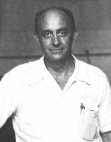

|
|
76 ENRICO FERMI 1901-1954
Dia
lulus dengan cemerlang dan terima gelar Ph.D. dalam bidang
fisika dari Universitas Pisa sebelum umurnya mencapai dua
puluh satu tahun. Dia itu, Enrico Fermi, perancang reaktor
atom pertama yang lahir tahun 1901 di Roma, Itali. Menjelang
usia dua puluh enam tahun dia sudah jadi profesor penuh di
Universitas Roma. Dan sementara itu dia sudah menerbitkan
kertas kerja utamanya, salah satunya berkaitan dengan cabang
fisika yang sulit serta mendalam yang disebut "statistik
kuantum." Dalam kertas kerja itu, Fermi mengembangkan teori
statistik yang digunakan untuk melukiskan tingkah laku
penyatuan partikel dalam jumlah besar yang terpisah-pisah,
jenis yang kini dihubungkan sebagai "fermions." Karena
elektron, proton dan neutron --tiga "gugus bangunan" yang
terdiri dari benda biasa-- kesemuanya "fermion." Teori Fermi
punya makna yang sangat penting buat ilmu pengetahuan.
Statemennya ini membuka kemungkinan kita punya pengertian
lebih baik tentang bagian pokok inti atom, tentang tingkah
laku penurunan mutu suatu benda (seperti terjadi pada bagian
dalam sejenis bintang-bintang tertentu), dan tentang
unsur-unsur yang terkandung dari sifat-sifat logam. Ini
jelas merupakan topik masalah yang punya banyak guna.
Tahun 1933 Fermi merumuskan teori tentang "kemerosotan
beta" (sejenis radioaktivitas) yang mengaitkan perbincangan
kuantitatif pertama kali tentang "neutrino dan interaksi
lemah," dua topik penting dalam dunia fisika masa kini.
Penyelidikan macam itu, kendati tidak gampang dipahami awam,
menempatkan Fermi selaku salah seorang ahli fisika terkemuka
di dunia. Tetapi, hasil karya Fermi paling penting belumlah
muncul.
Tahun 1932, seorang ahli fisika Inggris, James Chadwick,
telah berhasil menemukan partikel subatomis yang namanya:
neutron. Mulai dari tahun 1934, Fermi meneruskan dengan cara
mengirimkan arus partikel berkecepatan tinggi terhadap atom
dengan neutron. Percobaan-percobaannya menunjukkan bahwa
banyak jenis atom sanggup menyerap neutron, dan dalam banyak
hal atom-atom yang dihasilkan dari pengubahan nuklir macam
ini mengandung radioaktif.
Orang sudah selayaknya mengharapkan bahwa akan lebih
mudahlah buat neutron merembes ke dalam bagian utama atom
apabila neutron bergerak dengan kecepatan tinggi sekali.
Tetapi, percobaan Fermi menunjukkan kebalikan dari itu.
Yaitu, bilamana neutron yang cepat dipelankan dulu dengan
cara membuat ia lewat melalui "paraffin" atau air, dia dapat
lebih siap diserap oleh atom. Penemuan ini sangat penting
dalam penggunaan di bidang pembangunan reaktor nuklir. Bahan
yang digunakan dalam reaktor untuk membikin pelan gerak
neutron-neutron dikenal dalam sebutan "moderator."
Tahun 1938, penyelidikan penting Fermi tentang penyerapan
neutron membuat ia peroleh Hadiah Nobel dalam bidang fisika.
Tetapi, berbarengan dengan itu dia mengalami kesulitan di
Itali. Pertama, istri Fermi berdarah Yahudi sedangkan
pemerintahan Fasis di Itali mengeluarkan sejumlah
undang-undang yang bernada anti Yahudi. Kedua, Fermi seorang
berfaham gigih anti fasis, suatu sikap yang amat berbahaya
pada saat Itali di bawah diktator Mussolini. Bulan Desember
tahun 1938, tatkala dia pergi ke Strockholm untuk terima
Hadiah Nobel, dia tidak kembali lagi ke Itali, tetapi pergi
ke New York. Karuan saja, Universitas Colombia
melompat-lompat kegirangan dapat tenaga ahli salah seorang
ilmuwan yang terbesar di dunia. Tak pikir panjang, Fermi
segera disediakan kedudukan. Fermi jadi warganegara Amerika
Serikat tahun 1944.
Di awal tahun 1939, dilaporkan oleh Lise Meitner, Otto
Hahn, dan Fritz Strassmann bahwa penyerapan neutron-neutron
kadangkala menyebabkan atom-atom uranium jadi
terpisah-pisah. Ketika kabar laporan ini pecah, Fermi
(begitu juga beberapa ahli fisika terkemuka) segera
menyadari bahwa terpisah-pisahnya atom uranium dapat
melepaskan cukup neutron untuk memulai reaksi berantai.
Lebih jauh dari itu, Fermi (juga bersama ahli fisika
lainnya) segera melihat dan membayangkan potensi kemiliteran
yang bisa dihasilkan oleh reaksi berantai ini. Menjelang
bulan Maret tahun 1939, Fermi telah menghubungi Angkatan
Laut Amerika Serikat dan mencoba menarik perhatian mereka
dalam hal pembikinan senjata atom. Tetapi, baru beberapa
bulan kemudian, sesudah Albert Einstein menulis sepucuk
surat mengenai soal itu kepada Presiden Roosevelt, barulah
pemerintah Amerika Serikat menaruh perhatian terhadap tenaga
atom.
Begitu pemerintah Amerika Serikat tertarik, tugas para
ilmuwan yang paling utama adalah membangun sebuah prototip
alat untuk mengawasi pelepasan tenaga atom untuk melihat
apakah reaksi berantai yang bisa bertahan sendiri
betul-betul bisa dipertanggungjawabkan. Berhubung Enrico
Fermi seorang ilmuwan yang berbobot dan berwenang dalam hal
ihwal neutron, dan karena dia sudah menggabungkan baik bakat
teori maupun praktek percobaan-percobaannya, dia ditunjuk
jadi kepala grup untuk mencoba membangun reaktor atom
pertama di dunia. Pertama dia bekerja di Universitas
Colombia, kemudian di Universitas Chicago. Di Chicago
inilah, tanggal 2 Desember 1942, reaktor nuklir itu selesai
dirancang dan dibangun dengan berhasil di bawah pengawasan
Fermi. Ini betul-betul suatu babak mula dari jaman atom,
karena untuk pertama kalinya dalam sejarah manusia orang
berhasil membuat reaksi berantai nuklir. Percobaan yang
berhasil ini segera dikirim ke timur dengan kata-kata
bertuah tetapi mengandung citra gaib, "Navigator Itali sudah
menginjakkan kaki di dunia baru." Sesudah peristiwa
berhasilnya percobaan ini, diputuskan untuk bergegas
diteruskan secepat-cepatnya lewat yang disebut "Proyek
Manhattan." Fermi meneruskan memegang peranan menentukan di
proyek itu selaku penasehat ahli yang menonjol.
Sesudah perang, Fermi jadi mahaguru di Universitas
Chicago. Dia meninggal dunia tahun 1954, Fermi kawin dan
beranak dua. Elemen kimia nomor 100, "fermium," dijuluki
atas namanya sebagai tanda penghormatan.
Fermi merupakan orang penting ditilik dari pelbagai sebab
dan jurusan. Pertama, tak syak lagi dialah ilmuwan terbesar
di abad ke-20 dan satu dari segelintir orang yang termasyhur
baik selaku teoritikus maupun pencoba. Hanya sedikit sekali
hasil karya ilmiahnya dibeberkan di dalam buku ini, tetapi
Fermi sesungguhnya sudah menulis lebih dari 200 artikel
ilmiah selama kariernya.
Kedua, Fermi merupakan tokoh amat penting dalam kaitan
pembikinan bom atom, kendati beberapa orang lain pegang
peranan yang setara pentingnya dalam pekerjaan itu.
Tetapi, arti penting terpokok Fermi berpangkal pada
peranan utamanya yang dia pegang dalam hal penemuan reaktor
atom. Jelas sekali saham Fermi dalam hubungan ini. Dia beri
sumbangan teori yang menentukan, dan dia mengawasi
perancangannya dan sekaligus pembangunan reaktor
pertamanya.
Sejak tahun 1945, tak ada bom atom yang digunakan dalam
peperangan, tetapi sejumlah besar reaktor nuklir dibangun
untuk pembangkit energi bagi tujuan-tujuan damai.
Reaktor-reaktor tampaknya bahkan akan punya arti lebih
penting di masa depan. Lebih dari itu, beberapa reaktor
digunakan untuk memprodusir radio isotop yang berguna itu,
yang digunakan di bidang kedokteran dan penyelidikan ilmiah.
Reaktor juga --dan lebih menakutkan--merupakan sumber
"Plutonium," bahan utama (substansi) yang dapat digunakan
untuk bikin senjata-senjata atom. Ada ketakutan yang bisa
dimengerti bahwa reaktor nuklir bisa menjadi bencana besar
buat kemanusiaan, tetapi tak ada yang menganggap bahwa
penemuan itu barang sepele. Entah untuk kebaikan atau untuk
keburukan, hasil karya Fermi akan punya pengaruh luas di
masa-masa mendatang.
|